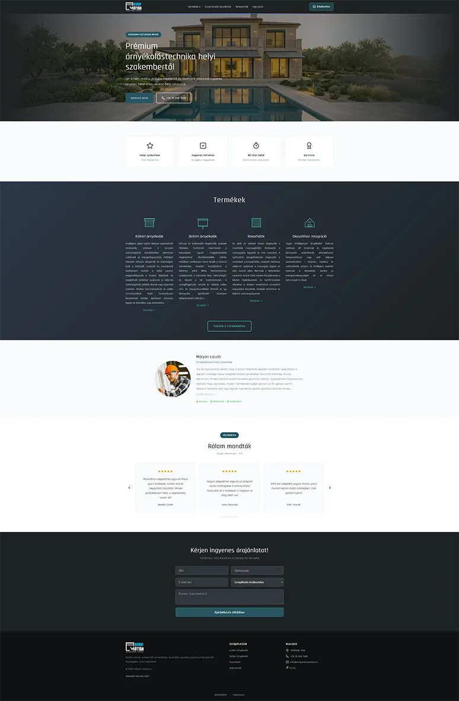
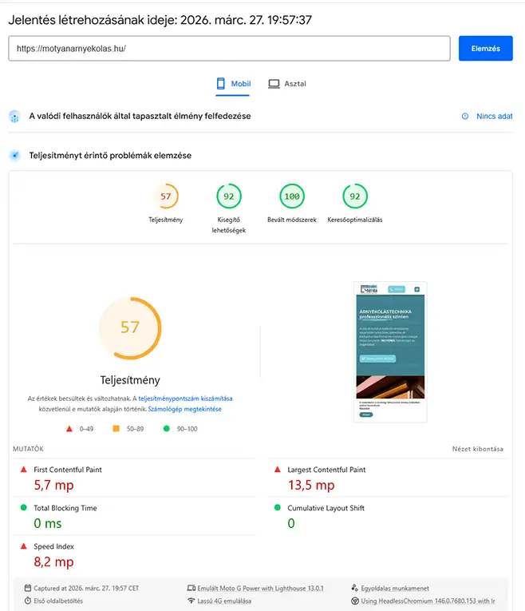
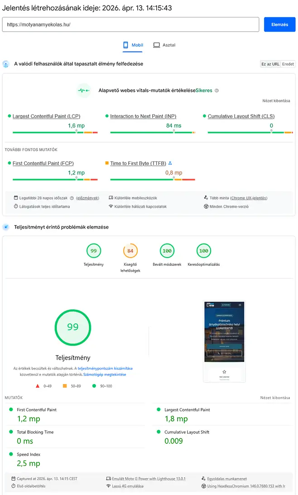

Két új követelmény fordult kötelezővé. EAA WCAG 2.2 AA 2025. június 28. óta minden EU-s e-kereskedelmi és szolgáltató oldalra. AX-readiness 2026-tól versenyelőny, 2027-re alapfeltétel. A meglévő WordPress / Elementor oldalak nagy része egyikre sem kész. Itt megnézzük, mikor elég a finomhangolás, és mikor jön a teljes Astro 5 migráció. Ha új projekt indul, a ajánlatgeneráló weboldalak landing; ha webshop-ról van szó, a webáruház készítés oldal a megfelelő.
A WordPress önmagában nem ellenség. Blogra, kisebb céges oldalra, ahol a tartalom-szerkesztés napi feladat, ma is vállalható. A probléma akkor kezdődik, amikor két új tényező rakódik rá: EAA-megfelelés (kötelező) és AX-readiness (versenyelőny). A legtöbb régi WP-oldal egyikre sem kész — nem a WordPress hibája, hanem mert ezek a követelmények egyszerűen újabbak, mint az oldal építése.
2025. június 28. óta kötelező az EU-ban e-kereskedelmi és szolgáltató oldalakra. WCAG 2.2 AA szint: szín-kontraszt, billentyűzet-navigáció, képernyőolvasó. NAH-bejelentés bírsággal jár, és ~8% potenciális ügyfél (vakok, képernyőolvasósok) sem fér hozzá az oldalhoz.
Egyre többen AI-tól, ChatGPT-től, Perplexity-től kérdeznek vásárlás vagy megrendelés előtt. A meglévő WP-oldalak strukturált adatai szegényesek, /llms.txt nincs, agents.txt nincs. Aki ma frissít, két év múlva már nem lesz lemaradva.
2024 óta a Google rangsorolási tényező. A pluginhalmozott WP-oldalak tipikusan piros LCP / CLS / INP értékeket produkálnak mobilon — és a Google láthatóan büntet érte. Egy Astro 5 migráció után ezek zöldbe kerülnek.
A gyakorlati probléma: sok olcsó WordPress projekt a "banánnal fizetsz, majmot kapsz" kategória — elsőre olcsónak tűnik, később a pluginhalmozás, a lassulás, a törékeny frissítések és a nehézkes EAA-/AX-utófrissítés miatt üzletileg drágább, mint egy átgondolt új alap.
Tíz éve a kérdés úgy szólt: "építhetjük WordPress-en?" — és ha igen, akkor azt választottuk. 2026-ra megfordult. A kérdés most: "van-e ok WordPress-t választani?" — és ha nincs konkrét érv (napi tartalom-szerkesztés, mély kliens-önállóság igény), akkor az Astro 5 a default. Két dolog dönt a fordulatban: az EAA-megfelelés Astro 5-ön egyszerűbb és olcsóbb karbantartani, és az AX-readiness (JSON-LD, /llms.txt, MCP) zöldmezős Astro projektben ingyen jár.
| Szempont | WordPress (2026) | Astro 5 (2026) |
|---|---|---|
| Core Web Vitals | Plugin-tisztítás, cache-konfiguráció és képoptimalizálás után zöldbe rakható, de fenntartani folyamatos figyelem. | Default-ban zöld. Statikus build, minimális JS, automatikus képoptimalizálás. Karbantartás nélkül is zöld marad. |
| EAA WCAG 2.2 AA | Téma- és plugin-függő. Sok komponens (slider, popup, builder-ek) nem akadálymentes alapból, utólagos javítás drága. | Tiszta HTML komponensekkel az akadálymentesség az alap része. ARIA-szerepek és billentyűzet-navigáció dokumentálva. |
| AX-readiness | JSON-LD plugin-eken keresztül, /llms.txt nincs natív megoldás, MCP-endpoint külső infra (extra szerver). | JSON-LD a komponensben, /llms.txt build-time generálás, MCP-endpoint serverless function. Egy projekt, egy karbantartás. |
| Tartalom-szerkesztés | Erős, ismert admin-felület. Ha a kliens napi-heti gyakorisággal szerkeszt, ez fontos szempont. | Headless CMS-sel (Sanity, Strapi, Decap) vagy git-alapú workflow-val. Tanulási görbe magasabb, viszont a teljesítmény és a verziókezelés tisztább. |
| Egyedi funkciók (kalkulátor, konfigurátor) | Lehetséges, de gyakran pluginfüggő vagy egyedi PHP fejlesztéssel — nehezen karbantartható. | Erős oldala. React/Vue/Svelte komponens, tiszta API-k, könnyen tesztelhető és karbantartható kód. |
| Mikor választjuk? | Napi-heti tartalom-szerkesztés admin-felületről, kliens-önállóság a CMS-en fontosabb a teljesítmény-céloknál. | Default 2026-ban. Sales-eszköz, ajánlatgeneráló oldal, webshop, performance-kritikus landing, EAA-érzékeny szektor. |
A Tata, Tatabánya, Komárom és környékére készült árnyékolás-konfigurátor jól mutatja, mit jelent egy CENTAUR-stílusú modernizálás: nem csak gyorsabb oldal, hanem ajánlatgeneráló sales-eszköz. A régi WordPress helyére Astro 5 alapú rendszer került, EAA-megfeleléssel, JSON-LD strukturált adatokkal, és egyedi árkalkulátorral, ami az érdeklődő számára azonnal nagyságrendi árat mutat — mielőtt egyáltalán elküldené az ajánlatkérést.
Nem csak frontendet cseréltünk. A klasszikus "küldjön e-mailt és visszahívjuk" CTA helyét átvette egy vizuális konfigurátor, kosárlogikával és kvalifikált ajánlatkérő űrlappal. A Mótyán üzleti oldalról nézve: kevesebb felesleges hívás, több olyan lead, aki már tudja, mit akar és milyen nagyságrendben.
A legfontosabb felhasználói felület mobilon lett radikálisan gyorsabb.
Stabil, gyors, technikailag tisztább desktop élmény.
A kulcstartalom közel azonnal megjelenik — az érdeklődő nem ugrik el.
A felhasználó nem nézelődik, hanem számol és kvalifikáltan érdeklődik.


Régi állapot: lassú mobilos élmény, gyenge LCP és sérülő felhasználói türelem.
Új állapot: közel azonnali megjelenés, jobb UX és erősebb technikai SEO-alap.Nem lehet előre megmondani, hogy a meglévő oldalad finomhangolható-e, vagy migráció kell. Ezért 30-perces díjmentes diagnosztikai hívással indítunk, opcionális AX-audittal folytatjuk, és csak scope után készül egyedi árajánlat. Az alábbi tartomány tipikus referencia, nem fix árajánlat.
450.000 – 1.200.000 Ft
Felújítás + EAA-megfelelés komplett scope: WP→Astro 5 migráció, 301-redirect térkép, WCAG 2.2 AA audit + javítás, Core Web Vitals zöldbe, alap AX-readiness.
Nagy oldalszám (50+ aloldal), magas plugin-szám, egyedi PHP-funkciók migrálása, 2+ nyelv, komplex tartalom-átemelés, EAA-szempontból kritikus kiindulóállapot (sok komponens nem akadálymentes), CRM-integráció.
Kisebb oldal (10-15 aloldal), tiszta tartalom, kevés plugin, 1 nyelv, részben jó kiinduló EAA-állapot. Ha csak finomhangolás (cache, képek, plugin-tisztítás) kell migráció helyett, külön scope, sokkal kisebb keret.
Az AX-audit önállóan is választható, ha nem akarsz azonnal projektet: fix 120.000 Ft / ~2 hét, írásos riport a meglévő oldalad állapotáról, EAA-státuszról, JSON-LD-helyzetről, és számozott akciótervről. Az audit ára 100%-ban beszámítódik, ha utána projektre váltunk.
Egészségügy, oktatás, közigazgatás, e-kereskedelem, banki és pénzügyi szolgáltatás — ahol a WCAG 2.2 AA megfelelés nem csak versenyelőny, hanem kötelező és kontrollált.
Ha a meglévő WP-oldal "küldjön e-mailt" CTA-val működik, és érdemes lépni ajánlatgeneráló sales-eszközre. Ilyenkor a migráció + új konfigurátor együtt megy — részletek az ajánlatgeneráló weboldalak oldalon.
Ha a meglévő WooCommerce vagy Shopify front-endje már fék, és érdemes átállni headless Astro 5-re, MCP-Commerce-előkészítéssel. Részletek a webáruház készítés oldalon.
Ha a Search Console-ban piros Core Web Vitals értékek vannak, és látszik, hogy a Google rontja a pozíciókat. Egy migráció után ezek tipikusan 2-4 hét alatt zöldbe kerülnek, és a SEO-érték visszaáll vagy javul.
30 perc videohívás, díjmentesen. Küldd el a jelenlegi webcímedet, és megnézzük: hol tart az oldal EAA-szempontból, milyen Core Web Vitals értékeket produkál, és mikor érdemes finomhangolni vagy teljes Astro 5 migrációba kezdeni. A diagnosztika után tudjuk eldönteni, hogy AX-audit vagy közvetlen projekt a következő lépés.
8 lépésben összeállítod a projekted scope-ját — vizuális mockup-választó, funkció-kalkulátor, nagyságrendi tartomány a végén. Nem kötelez semmire.
Konfigurátor megnyitása →